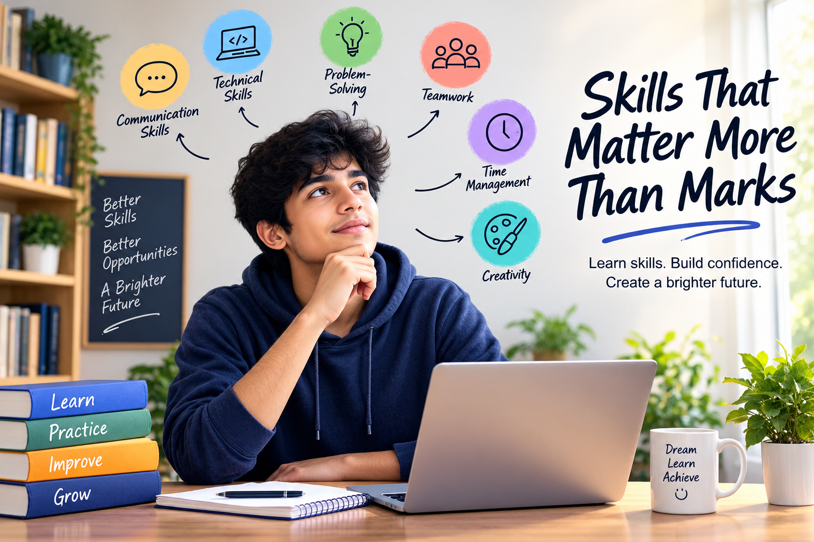

Skills That Matter More Than Marks
Why developing real-world skills can be just as important as getting good marks.

Introduction
For many students, marks are considered one of the most important measures of success. Exams, grades and academic results can influence opportunities and help us understand how well we have learned a subject.
However, success is not only about the numbers written on a report card. As students prepare for college, careers and real-world challenges, they also need practical skills that help them communicate, solve problems, work with others and adapt to change.
"Marks can show what you have learned, but skills show what you can do."
Why Do Skills Matter for Students?
Imagine two students with similar academic results. One student has only focused on examinations, while the other has also developed communication, teamwork, technical and problem-solving skills.
In real situations, both knowledge and skills are valuable. Skills allow students to apply what they learn instead of simply remembering information.
6 Skills Every Student Should Develop
Communication Skills
Good communication helps us express ideas clearly, listen to others and build better relationships. It is useful in classrooms, interviews, presentations and future careers.
Technical Skills
Technology is part of almost every modern career. Learning useful digital tools, programming, design or other technical skills can help students become more confident and prepared.
Problem-Solving
Problems are a part of everyday life. Learning how to understand a problem, think about different solutions and make good decisions is a valuable ability.
Teamwork
Very few important tasks are completed alone. Teamwork teaches students how to cooperate, share responsibilities, respect different opinions and work towards a common goal.
Time Management
Students often have to balance classes, assignments, projects and personal activities. Managing time effectively helps reduce stress and makes it easier to complete important tasks.
Creativity
Creativity is not limited to art. It means thinking differently, asking questions and finding new ways to approach challenges.
Marks vs Skills
Marks and skills should not be treated as enemies. Both have their own importance. Academic performance can demonstrate subject knowledge, while skills help students apply that knowledge in practical situations.
How Can Students Develop These Skills?
Developing life skills for students takes regular practice and experience. Students can improve these skills by participating in projects, working with others, managing their time and trying new activities.
- Participate in group projects.
- Practice speaking and presenting ideas.
- Learn new digital and technical tools.
- Take part in college activities.
- Read, explore and ask questions.
- Learn from mistakes and try again.
Conclusion
Marks are an important part of education, but they are only one part of a student's journey. Knowledge becomes more valuable when we know how to use it.
By developing communication, technical, problem-solving, teamwork, time-management and creative skills, students can become better prepared for the opportunities and challenges ahead.
So, aim for good marks, but do not stop there. Keep learning, keep practicing and keep building skills that will stay with you long after an exam is over.